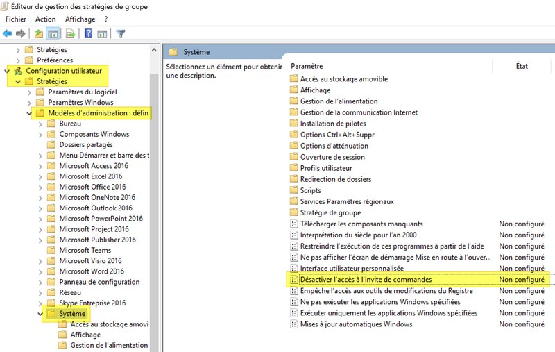

🛠️ Compétences
- Administration réseau (Switchs, Serveurs, Routeur, Pare Feu)
- Virtualisation (VMware, VirtualBox)
- Scripting (PowerShell, Bash)
- Serveurs (Windows Server, Linux)
🎓 Formations
BTS SIO – Option SISR
Bac SN – Spécialité RISC

🚀 Projets
📄 Tableau de synthèse
🗂️ Tâches réalisées
Installation et configuration d’un serveur RADIUS sous Windows Server 2012 avec filtrage d'authentification (par groupe AD).
Voir plus de détailsInstallation et configuration d’un serveur FTP sur Gespage avec redirection des scans sur répertoire personnel de l'utilisateur.
Création d’une stratégie de groupe (GPO) pour appliquer des restrictions sur les postes utilisateurs (bureau, accès aux applications, scripts de connexion).
Sur un serveur Windows (Machine Virtuelle) avec un contrôleur de domaine qui gère le réseau pédagogique
Voici une capture d'écran d'une stratégie de groupe que j'ai pu réaliser:
Surveillance du parc informatique avec GLPI et l'agent FusionInventory, configuration de tickets pour les incidents réseau ou matériels.
🙋♂️ À propos
Je suis basé à Charavines, je vise une carrière dans l’administration système ou la cybersécurité.
📫 Contact
Email : arthursabanoglu1@gmail.com
GitHub : ArmorialOfficiel